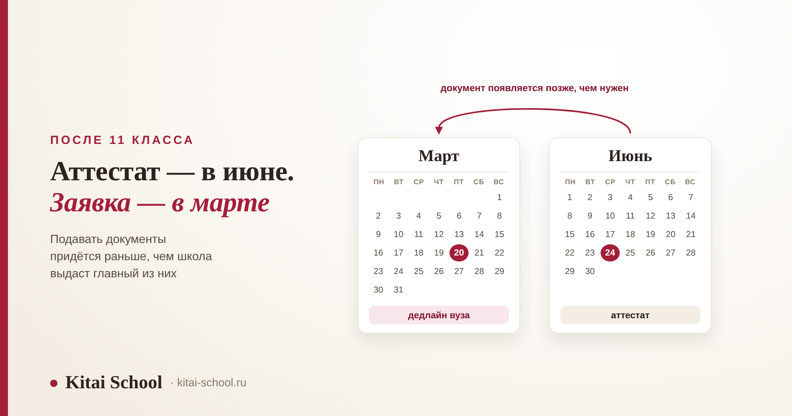
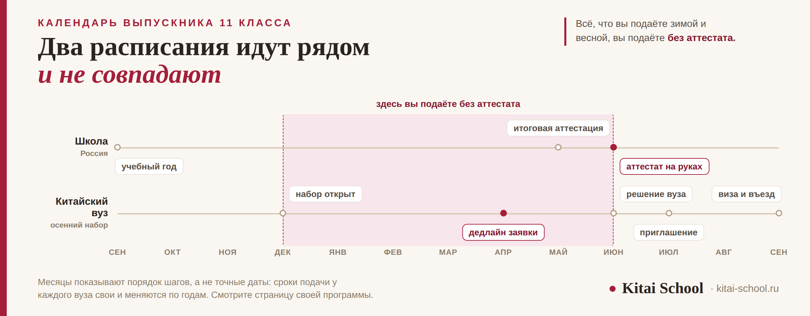

Образование в Китае
Обучение в Китае для русских после 11 класса: что подавать, пока аттестата нет


Обычно спрашивают про список документов. Но список у выпускника школы почти такой же, как у всех остальных, и проблема не в нём. Проблема в календаре. Китайский вуз собирает заявки на осенний набор весной, а аттестат российская школа выдаёт в июне, после итоговой аттестации. Получается, что подавать документы вы будете тогда, когда главного документа у вас ещё нет, — и делать это придётся одновременно с выпускными экзаменами. Разберём, чем закрывают это место в заявке, что заказывать заранее и в каком порядке идут шаги.
Заявку подают раньше, чем выдают аттестат. У части вузов место аттестата на этапе подачи закрывает справка из школы с выпиской оценок, а решение до предъявления оригинала остаётся условным. Заранее делают две вещи: подтверждают язык и заказывают апостиль с переводом — ускорить их нельзя. Возраст до восемнадцати не мешает поступить, но вуз может попросить согласие родителей. У стипендиальных программ дедлайны раньше платных, и для школьника это меняет весь план.
Главная сложность: заявку подают раньше, чем выдают аттестат
Российский выпускник получает аттестат в июне, когда закончена итоговая аттестация. Китайский вуз набирает студентов на осенний семестр и собирает заявки в типичном случае зимой и весной того же года. Между этими двумя датами проходит несколько месяцев, и именно на них приходится вся подача.
Отсюда следует вещь, которая пугает почти каждого, кто разбирается в этом впервые. Вам придётся подать заявку, не имея на руках документа об образовании. Это не ошибка и не исключение, а обычный порядок для иностранного абитуриента: китайская сторона знает, что школьные системы в разных странах заканчиваются в разные месяцы, и умеет с этим работать.
Почему об этом редко предупреждают, тоже понятно. Сводные статьи про поступление пишут для всех сразу: для выпускника колледжа, для бакалавра, для человека, который решил поехать учиться через три года после школы. У них у всех документ уже на руках, и вопрос календаря просто не возникает. А у одиннадцатиклассника он возникает первым.
Есть и вторая сложность, про которую тоже стоит сказать сразу. Подача приходится ровно на тот период, когда вы готовитесь к выпускным экзаменам. Собирать справки, заказывать переводы и переписываться с приёмной комиссией в апреле и мае тяжело, и рассчитывать, что всё это делается между делом, не стоит. Всё, что можно сделать осенью, лучше сделать осенью.
Общая картина поступления в китайский вуз — четыре входа и куда каждый ведёт — разобрана отдельно, в статье про обучение в Китае для русских. Полный список документов, который просит вуз, разобран в статье про поступление в Китай без ЕГЭ. Здесь мы эти два разговора не повторяем и занимаемся только календарём выпускника.
Чем закрывают пустое место в заявке
Первое, что нужно выяснить на странице своей программы: принимает ли вуз заявку от человека, который ещё учится в школе. Часть вузов принимает, часть просит приходить с готовым аттестатом. Это правило у каждого своё, и общего ответа здесь не существует.
Если вуз принимает, на место аттестата в комплекте встают два документа. Справка из школы о том, что вы учитесь в одиннадцатом классе и закончите его в текущем году. И выписка оценок за десятый класс и за первое полугодие одиннадцатого — по ней комиссия смотрит, как вы учитесь.
| Документ | Где берут | На что обратить внимание |
|---|---|---|
| Справка об обучении | в своей школе | в ней должно быть сказано, что вы завершаете обучение в этом году |
| Выписка текущих оценок | в своей школе | её тоже переводят и заверяют, как и остальные документы |
| Подтверждение языка | экзамен, сданный заранее | единственный пункт, который нельзя получить быстро |
| Аттестат с приложением | школа, после выпуска | досылают летом, когда он готов |
Решение, которое вуз принимает по такому комплекту, будет условным. Это значит: вас берут при условии, что вы действительно закончите школу и предъявите оригинал аттестата. Как только документ готов, вы его досылаете, и решение становится окончательным. Никакого подвоха в слове «условное» нет, но понимать его надо буквально — пока аттестат не показан, место за вами не закреплено.
Из этого следует практический вывод. Не планируйте на июль ничего, кроме документов. В июне вы получаете аттестат, дальше его надо перевести, заверить и отправить, потом дождаться приглашения и подать на визу. Если между выпускным и вылетом вы планировали месяц отдыха, лучше перенести его на август и заложить запас: любой из шагов может занять больше времени, чем вы рассчитывали.
И то, что стоит проверить до всего остального. Откройте страницы трёх-четырёх конкретных программ и найдите там раздел для иностранных абитуриентов. В нём написано ровно то, что вам нужно сейчас: до какого числа принимают заявки, берут ли документы от выпускников текущего года и какой язык требуют. Это занимает вечер и даёт более точную картину, чем месяц чтения форумов.

Апостиль и перевод: то, что нельзя ускорить
Китайский вуз принимает российский документ об образовании не в том виде, в каком его выдала школа. Документ нужно легализовать и перевести, и у выпускника это чаще всего единственный шаг, который зависит не от него.
Апостиль — это штамп, которым подтверждают, что документ настоящий. Ставят его в уполномоченном органе того региона, где школа выдала аттестат. Деталь, о которой чаще всего не знают: приложение с оценками — отдельный документ, и заверять его нужно отдельно от самого аттестата. Если заказать апостиль только на аттестат, приложение придётся везти на второй круг.
Сроки мы намеренно не называем. Они различаются по регионам и меняются, а чужая цифра из интернета здесь опаснее, чем её отсутствие: на неё построят план, а потом окажется, что в вашем регионе всё иначе. Позвоните и спросите — это один звонок.
Перевод делают после апостиля, а не до него: штамп тоже переводится. На какой язык — китайский или английский — и как именно его заверять, определяет вуз. Это написано в требованиях программы, и по-разному бывает даже у двух вузов одного города.
Отдельно про справку и выписку оценок. Их тоже переводят и заверяют, и делают это раньше, потому что они нужны на этапе подачи, а аттестат — уже после. То есть заверять документы придётся дважды: зимой то, что идёт в заявку, и летом сам аттестат. Это стоит заложить и по времени, и по деньгам.
Ко мне обратилась мама выпускника в конце марта. Сын выбрал программу, сдал HSK, справку в школе взял. До дедлайна оставалось чуть больше месяца, и они были уверены, что успевают.
Выяснилось, что апостиль на школьные документы в их регионе занимал дольше, чем они рассчитывали, и приложение с оценками надо было заверять отдельно — об этом они не знали. Вторую бумагу отправили на заверение только после первой, а не вместе с ней.
Заявку в тот вуз они не успели. Подали в другой, с более поздним сроком, и мальчик уехал учиться в том же году. Но история показательная: подвёл их не язык и не оценки, а один штамп, который нельзя было ни ускорить, ни обойти.
Что из этого делать прямо сейчас, если вы в одиннадцатом классе. Узнайте про апостиль осенью, а не весной. Один звонок в свой регион даёт вам самое точное число во всём плане, и дальше от него считается всё остальное.
Если на момент въезда вам ещё нет восемнадцати
Ситуация обычная: многие выпускники подают документы в семнадцать лет и уезжают учиться, когда совершеннолетие ещё не наступило. Отказать вам только из-за возраста не должны, но несколько пунктов добавляются.
Согласие законных представителей. Вуз может попросить письменное согласие родителей на обучение и на выезд. Как оно оформляется и нужно ли его заверять, зависит от вуза, и уточнять это надо в правилах приёма.
Человек, который отвечает за вас в Китае. Некоторые вузы просят указать взрослого, с которым можно связаться на месте. Это не обязательно родственник и не всегда кто-то, кого вы знаете лично: у части вузов эту роль берёт на себя куратор по работе с иностранными студентами.
Общежитие. Правила заселения несовершеннолетних тоже устанавливает вуз, и они бывают строже обычных: комендантский час, отдельный корпус, согласие родителей на проживание. Спросить об этом лучше до подачи, а не после приезда.
Общее правило здесь простое: все три требования ставит конкретный вуз, а не какой-то общий закон. Поэтому ответ ищется в правилах приёма вашей программы, а не в статьях. Про сам переезд и первые недели на месте у нас есть отдельный разбор про переезд в Китай.
Если метите на оплаченное место
Бесплатные места в китайских вузах есть, и выпускник школы на них претендовать может. Но для одиннадцатиклассника здесь есть одна особенность, которая перевешивает всё остальное.
У стипендиальных программ дедлайны обычно раньше, чем у платных программ того же вуза. Разница бывает в месяц и больше. Значит, если вы метите на оплаченное место, весь ваш план сдвигается на более ранние сроки: и язык, и справки, и апостиль нужны раньше, чем однокласснику, который идёт на платное.
Второе, что стоит понимать до начала. Слово «бесплатно» означает разное. Грант может покрывать только обучение, обучение вместе с общежитием или ещё и ежемесячную выплату. Расходы до подачи не покрывает никакой грант: переводы, заверения, экзамен по языку и дорогу вы оплачиваете сами, и эти деньги не вернут независимо от результата.
| Ваш вопрос | Где разобрано |
|---|---|
| Какие бывают гранты и как распределяются места | гранты на обучение в Китае |
| Что именно покрывает стипендия и где нужны свои деньги | бесплатное образование в Китае |
| Пять путей к оплаченному месту и календарь подачи | как поступить в Китай на бюджет |
| Мотивационное письмо и интервью | стипендия CSC в Китае |
Совет, который экономит год. Не выбирайте между платным и бесплатным в последний момент. Решить это надо осенью выпускного класса, потому что от решения зависит, к какому сроку вам нужен язык. Если вы определитесь в марте, выбора уже не будет: подавать придётся туда, куда успеваете.
Порядок действий: от осени до въезда
Конкретных дат здесь нет, и это осознанно: у каждого вуза свои сроки, и они меняются каждый год. Но порядок шагов одинаковый, и по нему удобно проверять себя.
| Когда | Что делать |
|---|---|
| Осень выпускного класса | выбрать три-четыре программы, выписать их сроки и требования; узнать про апостиль в своём регионе; решить, платное или бесплатное |
| Зима | сдать экзамен по языку; взять справку и выписку оценок в школе; заказать переводы и заверение |
| Весна | подать заявку в срок вуза; при необходимости пройти собеседование; параллельно готовиться к выпускным экзаменам |
| Июнь | получить аттестат с приложением; сразу отправить оба документа на апостиль |
| Июль | перевести и заверить аттестат, дослать его в вуз; дождаться приглашения и формы для визы |
| Август | подать на учебную визу; оформить страховку; купить билеты и заселиться в общежитие |
Два места в этой цепочке заслуживают отдельного внимания. Экзамен по языку нужно сдать настолько заранее, чтобы успеть пересдать, если результат окажется ниже нужного. И приглашение вуза: без него и без формы, которую вуз выдаёт вместе с ним, подать на учебную визу нельзя. Виза оформляется последней, и торопить её бессмысленно, пока приглашения нет.
Про сам язык. Если программа идёт на китайском, обычно просят сертификат HSK, и какой уровень — написано в требованиях программы. Что представляет собой подготовка к нужной ступени, разобрано в статье про подготовку к HSK 4. Чем подготовительное отделение 预科 отличается от языковых курсов, мы разбирали в статье про языковые курсы в Китае: у первого есть прописанный переход в программу вуза, у вторых его нет.
Что мы здесь не пересказываем
Эта статья про календарь выпускника, и только про него. Всё остальное про учёбу в Китае у нас уже разобрано отдельно и подробнее, чем получилось бы здесь.
| Ваш вопрос | Где разобрано |
|---|---|
| Полный список документов в китайский вуз | поступление в Китай без ЕГЭ |
| Какие вообще бывают входы в китайский вуз | обучение в Китае для русских |
| Как устроен бакалавриат и что такое 预科 | бакалавриат в Китае |
| Мотивационное письмо и собеседование | стипендия CSC в Китае |
| Сколько стоит жизнь в Китае | дорого ли в Китае |
| Переезд и первые недели на месте | переезд в Китай |
И главное, ради чего всё это собиралось. У выпускника школы мало времени и много одновременных дел, поэтому выигрывает не тот, кто лучше готов, а тот, кто раньше начал. Список документов вы соберёте за пару недель. Язык и апостиль за пару недель не собираются, и именно из-за них чаще всего теряют год.
Частые вопросы (FAQ)
Как поступить в Китай после 11 класса?
Порядок такой: выбрать программу и проверить её требования, заранее сдать экзамен по языку, подать заявку в срок вуза, дослать аттестат после выпуска, получить приглашение и оформить учебную визу. Главное здесь не список документов, а последовательность: заявку подают весной, а аттестат школа выдаёт в июне, и это расхождение надо заложить в план заранее.
Можно ли подавать документы, если аттестат ещё не получен?
У части вузов можно. На этапе подачи они принимают справку из школы о том, что вы учитесь в выпускном классе, вместе с выпиской текущих оценок. Решение в этом случае будет условным: его подтверждают после того, как вы предъявите оригинал аттестата. Берут так не все, поэтому правило надо смотреть на странице своей программы, а не в общих статьях.
Нужно ли ставить апостиль на школьный аттестат?
Чаще всего да, и вместе с аттестатом заверяют приложение с оценками — это отдельный документ. Сроки и орган зависят от региона, поэтому конкретных дней мы не называем: узнавайте в своём. Важно другое: апостиль нельзя ускорить деньгами или просьбой, и это единственный шаг, срок которого назначаете не вы.
Можно ли поступить в китайский вуз бесплатно после 11 класса?
Бесплатные места есть, но слово «бесплатно» означает разное: грант может покрывать только обучение, обучение вместе с общежитием или ещё и ежемесячную выплату. Для выпускника важно другое: у стипендиальных программ дедлайны обычно раньше, чем у платных. Значит, готовить документы и язык надо начинать не в выпускном классе, а раньше.
Что делать, если на момент подачи мне ещё нет восемнадцати?
Это обычная ситуация: многие выпускники подают документы в семнадцать. Вуз может попросить согласие законных представителей и данные человека, который будет отвечать за вас в Китае. Требование ставит вуз, а не общий закон, поэтому смотрите правила приёма своей программы. Отказать только из-за возраста вам не должны.
Нужен ли HSK для поступления после 11 класса?
Зависит от языка программы. Если программа на китайском, обычно просят сертификат HSK, и какой уровень — написано в требованиях программы. Если программа на английском, китайский при поступлении не спрашивают. Но подтверждение языка — единственный пункт, который нельзя собрать за месяц, поэтому начинают с него.
Готовитесь поступать после 11 класса? На диагностическом занятии посмотрим ваш уровень китайского и посчитаем, какую ступень HSK реально успеть сдать до подачи. Оставить заявку или написать в Telegram.
Дальше по теме: все входы в китайский вуз — обучение в Китае для русских; документы и требования — поступление в Китай без ЕГЭ; как устроена ступень 本科 — бакалавриат в Китае; языковой год — языковые курсы в Китае; гранты — гранты на обучение в Китае; что покрывает стипендия — бесплатное образование в Китае; бюджетные пути и календарь — как поступить в Китай на бюджет; мотивационное письмо и интервью — стипендия CSC в Китае; экзамен по языку — сертификат HSK и подготовка к HSK 4; переезд — переезд в Китай; цены на жизнь — дорого ли в Китае; занятия языком — курсы китайского для взрослых.
Источники
- Правила приёма иностранных абитуриентов на сайтах китайских вузов — единственное место, где написаны сроки и требования вашей программы.
- Практика Kitai School — подготовка к экзамену по языку и сопровождение тех, кто поступал сразу после школы.
- Типичная картина, а не строгое правило: сроки подачи, требования к документам и правила для несовершеннолетних различаются у вузов и меняются по годам. Проверять нужно на странице своей программы и в своём регионе.
Пусть поступается легко! 金榜题名！